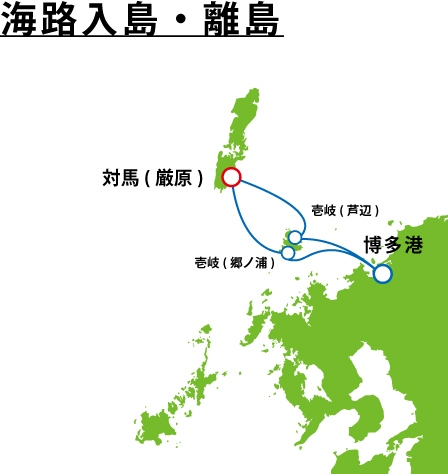
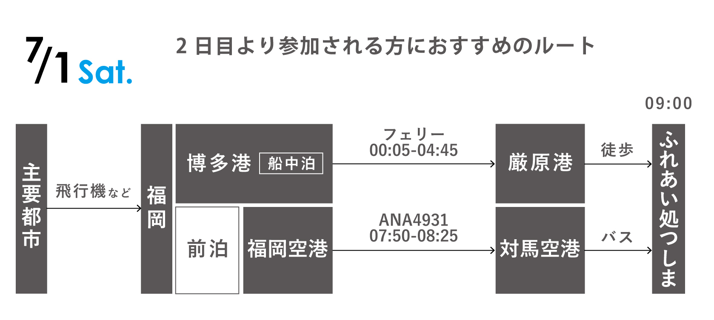

交通案内
各都市からアクセス
空路の場合、福岡空港または長崎空港経由となります。就航都市、時間、機材の関係で福岡経由のほうが余裕があります。

福岡港よりジェットフォイルまたはフェリーでアクセス可能です。到着地を厳原港にしてください。早朝着のフェリーでは朝7時まで船内滞在が可能です。
目安費用
時刻表、料金、のりば案内
参加日別オススメ経路
6月30日(金)
7月1日(土)

韓国からのアクセス

エアプサン就航都市(東京成田、中部、大阪、札幌)からは釜山経由でアクセス可能です。釜山からは高速船(海路)となります。高速船の到着地を厳原にしてください。 比田勝港行のものもありますので、ご注意ください。
対馬での過ごし方
対馬での過ごし方については「研究会のしおり」をお読みください
問い合わせ
研究会の内容やスケジュール、参加に際して気になる点がありましたら、下記アドレスまでお問い合わせください。
ikeko20471120[at]gmail.com
送信時には[at]を＠に変換してください。
また、細かな情報は研究会のFacebookページに掲載しております。ご参照のうえ、コメントを投稿いただくことで問い合わせをすることもできます。